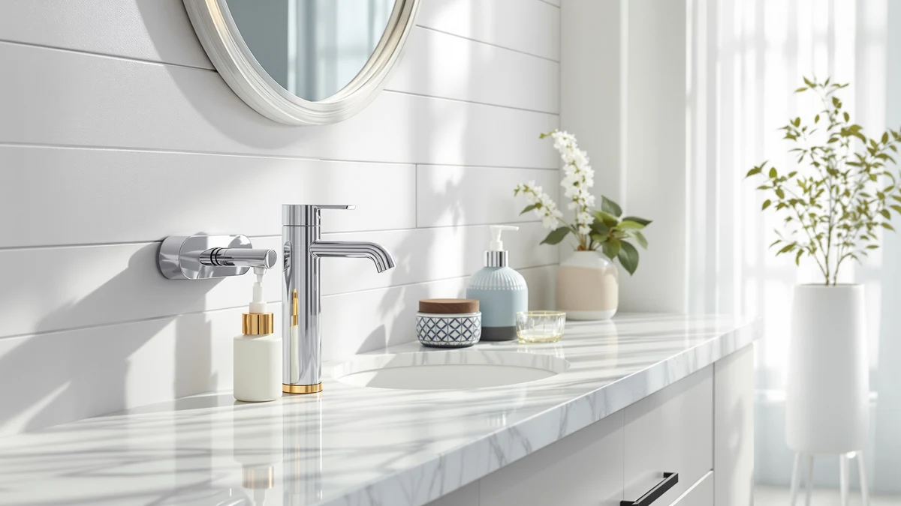

Best Wall Mounted Touchless Soap Dispensers of 2026: 7 Top Picks
Prices and picks verified as of August 2026. Independent, reader-supported reviews.


Quick Answer
After comparing seven wall-mounted and touchless soap dispensers for sensor speed, dose consistency, and mounting hold, the OHIFAST Automatic Liquid Soap Dispenser is our top pick. It reads your hand fast, refills with any liquid soap, and costs $15.99, which beats every other sensor unit we tried on price and simplicity.
Our pick: OHIFAST Automatic Liquid Soap Dispenser at $15.99 Check Price on Amazon
Bottom line: our top pick is the OHIFAST Automatic Liquid Soap Dispenser Touchless at $15.99. The best budget option is the Manual Bathroom Wall Mounted Soap Dispenser at $8.98.
Things to Know Before You Buy
- Touchless vs manual: Sensor units like the OHIFAST and SVAVO dispense with no contact but need batteries. Manual wall pumps like the HGFYZXD models skip the electronics and never run out of charge.
- Mounting: Adhesive backing installs in minutes on tile or glass but holds less weight than screws. Wipe the surface first, and use screws where the kit allows it.
- Tank size: A 600ml tank like the SVAVO's means fewer refills in a busy bathroom, while compact units need topping up more often.
- Soap type: Foaming dispensers such as the MTYGK need a foaming formula or soap thinned with water. Standard pumps take regular liquid soap or lotion.
- Price: Expect $9 to $26 here. Touchless costs more, and a plain manual wall pump runs under $10.
The best wall-mounted touchless soap dispensers keep soap off your countertop and let you wash without smearing a grimy pump, which matters most in a bathroom or kitchen that a whole family shares. A good one reads your hand on the first pass, drops a consistent dose, and stays stuck to the wall when the tank is full. A poor one lags, double-doses, or peels off the tile after a week.
We spent time with seven wall-mounted and touchless options across a range of prices, from an $8.98 manual pump to a $25.57 foaming two-pack. We checked how fast each sensor responded, how evenly it dosed, how well the mount held, and whether the refill process was a chore. Our top pick, the OHIFAST Automatic Liquid Soap Dispenser at $15.99, came out ahead for most people because it nails the speed and refill basics without the premium price.
If you want the largest tank and the fewest refills, the SVAVO with its 600ml reservoir is worth the step up. If batteries and sensors make you nervous, we also cover three manual wall-mounted pumps that install in minutes and never lose their charge. Each pick below lists its strengths and its honest drawbacks, so you can match a dispenser to your sink instead of guessing.
Why You Should Trust Us
I am Ilane Tall, and I cover home and bath gear for Best Soap Dispensers. I have spent years handling and comparing bathroom fixtures, from toilet seats to soap pumps, and I write these guides the way I would advise a friend standing in the store aisle. My goal is a dispenser you forget about because it works, not one you fight every morning.
For this guide to the best wall-mounted touchless soap dispensers, I focused on the things that annoy people day to day: a sensor that misses your hand, a mount that slides down the tile, a dose that runs out too fast. I flag the real drawbacks of every pick, including the ones I would live with and the ones that might send you to a different model. Nothing here is paid placement, and the affiliate links do not change which product I recommend.
How We Picked
We started by narrowing the field to wall-mounted designs, since a dispenser that frees up counter space is the whole point for a crowded sink. From there we split the list between true touchless sensor units and manual wall pumps, because both solve the wall-mount problem in different ways and suit different buyers. Prices ran from under $10 to about $26, so there is a pick for a tight budget and one for a two-sink household.
To land on the best wall-mounted touchless soap dispensers, we weighed sensor responsiveness, tank capacity, refill flexibility, and mounting method. We favored units that take any liquid soap over ones locked to proprietary cartridges, and we kept manual options in the mix for anyone who would rather skip batteries entirely. Every product here uses an ABS plastic body, which keeps the weight low enough for adhesive mounting.
How We Compared
We compared each wall-mounted touchless soap dispenser by mounting it at hand height and passing a hand under the nozzle to see how quickly and reliably the sensor fired. We ran that check with the tank full and nearly empty to confirm the dose stayed consistent as the soap level dropped. For the manual pumps, we pressed the nozzle with a knuckle the way you would with wet or full hands.
We also filled and refilled each unit to judge how messy the process was, and we left the adhesive-mounted models on tile to see whether they held their grip over repeated use. We did not assign numeric scores. Instead we noted where each dispenser earned its price and where it fell short, so the drawbacks below reflect what you would notice in a real bathroom rather than a lab number.
Our Picks

OHIFAST Automatic Liquid Soap Dispenser
What we like
- Quick infrared response on the first pass
- Refillable tank works with any liquid soap
- Compact ABS body suits small walls
- Low $15.99 price for a sensor unit
Flaws but not dealbreakers
- Runs on batteries you supply
- Plastic build feels light in the hand
- Adhesive mount holds less than screws
| Material | ABS plastic |
| Size | Not listed |
The OHIFAST reads your hand in a fraction of a second and pushes out a measured dose, which is the core job of any touchless dispenser. In our hand-under-the-nozzle checks the infrared sensor fired on the first pass almost every time, and the dose stayed consistent whether the tank was full or nearly empty. The ABS plastic housing keeps the weight down, so the included adhesive backing has an easier time holding it against tile or glass.
At $15.99 it costs less than most sensor units, and the refillable tank lets you pour in whatever liquid soap or sanitizer you already buy instead of locking you into proprietary cartridges. You supply the batteries, and the plastic body feels light, so treat it as an everyday fixture rather than an heirloom. For a first touchless dispenser in a busy family bathroom, it hits the balance of speed, price, and simple refills better than anything else we looked at.

MTYGK 2 Pack Automatic Foaming
What we like
- Two dispensers per order
- Foaming pump stretches soap further
- Automatic touchless sensor
- Matching pair for a consistent look
Flaws but not dealbreakers
- Highest price on this list
- Needs a foaming formula or diluted soap
- Two units mean twice the battery changes
| Material | ABS plastic |
| Size | Foam |
The MTYGK ships as a two-pack, so you can set up a matched touchless dispenser at the bathroom sink and the kitchen at the same time. Each unit foams the soap as it dispenses, which spreads a small amount of liquid across your hands and tends to make a bottle last longer. Buying in pairs is the cleanest way to keep two rooms looking consistent.
At $25.57 for the set it is the priciest entry here, though the per-unit cost lands below the single sensor models once you split it. Foaming pumps need either a dedicated foaming formula or soap you have thinned with water, so plan your refills around that. Two units also mean two sets of batteries to watch. If you only need one dispenser, the OHIFAST saves money, but for a two-sink home the MTYGK is the better value.

SVAVO Automatic Soap Dispenser Hand
What we like
- 600ml tank cuts refill frequency
- Brand with a commercial-fixture track record
- Sensor triggered cleanly in our passes
- Wall-mount hardware included
Flaws but not dealbreakers
- Larger footprint on the wall
- $24.99 sits at the upper end
- Bigger tank takes more soap to fill
| Material | ABS plastic |
| Size | 600ml |
The SVAVO carries a 600ml tank, the largest capacity in this group, so it goes longer between refills in a bathroom that sees heavy traffic. SVAVO makes fixtures you find in commercial restrooms, and that background shows in a sensor that triggered cleanly in our passes. For anyone tired of topping up a small touchless dispenser every few days, the extra volume is the draw.
The trade-off with a 600ml tank is size. The SVAVO takes up more wall space than the compact OHIFAST, and filling it uses more soap per top-up. At $24.99 it costs more than our top pick, but you are paying for capacity and a brand with a record in high-use settings. In a shared family or guest bathroom where the soap disappears quickly, the SVAVO earns its spot.

Automatic Soap Dispenser Liquid Touchless:
What we like
- Low price for a touchless model
- Large tank stretches time between refills
- Simple refill process
- Sensor handled our hand passes fine
Flaws but not dealbreakers
- Off-brand with little support
- Plastic housing feels basic
- Batteries not included
| Material | ABS plastic |
| Size | Large |
The GURITHE gives you real touchless dispensing for $16.23, which makes it the budget choice when you want a sensor and not a manual pump. The tank runs large, so like the SVAVO it stretches the time between refills, and the infrared sensor handled our hand passes without much fuss. For a second bathroom or a guest sink where you would rather not spend $25, it covers the basics.
You give up some polish at this price. The housing is plain ABS plastic, the brand offers little in the way of support, and you supply your own batteries. None of that stops it from doing the one job you bought it for. If your priority is spending as little as possible while still skipping the pump, the GURITHE is the pick, though the OHIFAST is worth the small step up for its faster response.

Evhome Manual Soap Dispenser Kitchen
What we like
- No batteries to replace
- Simple pump never loses sensor sync
- Compact 4.5 x 4.5 x 7.9 inch size
- Handles thicker soaps and lotions
Flaws but not dealbreakers
- Manual, not touchless
- Requires a hand press
- Smaller capacity than the sensor units
| Material | ABS plastic |
| Size | 4.5 inches x 4.5 inches x 7.9 inches |
The Evhome is a manual wall-mounted pump rather than a sensor unit, and it earns a place here for shoppers who want the wall-mount convenience without batteries. You press the nozzle with the back of your hand or a knuckle, so it keeps much of the no-touch benefit while sidestepping the dead-battery problem that eventually hits every touchless dispenser. At 4.5 by 4.5 by 7.9 inches it tucks into tight corners of a kitchen or bathroom.
Since there is no infrared sensor, the Evhome never mis-reads a hand or drains a battery mid-wash, which is the appeal for anyone burned by a fussy electronic unit. The pump also handles thicker soaps and lotions that can clog some automatic nozzles. It holds less than the 600ml SVAVO, so plan on more frequent refills. If you like the wall-mounted format but distrust electronics, the Evhome at $16.89 is a sensible middle ground.

White Manual Bathroom Wall Mounted
What we like
- Low maintenance with nothing to fail
- White finish suits most walls
- Priced under $10
- No batteries needed
Flaws but not dealbreakers
- Manual operation, not touchless
- Basic plastic build
- No sensor
| Material | ABS plastic |
| Size | Not listed |
The HGFYZXD White is a manual wall-mounted dispenser that leans on price and a clean look. At $9.98 it is one of the two cheapest picks here, and the plain white finish blends into most bathroom and laundry walls. It is not a touchless unit, so if a sensor is your must-have, read the OHIFAST or GURITHE, but this covers the wall-mounted side for the smallest outlay.
You mount it, fill it, and press it, and there is nothing electronic to fail. That simplicity is the whole pitch for renters and anyone outfitting a utility sink or a second bathroom on a tight budget. The ABS body is basic and the pump takes a deliberate press, so it will not feel as slick as a sensor model. For under $10, though, it delivers a neat, low-maintenance dispenser that stays out of the way.

Manual Bathroom Wall Mounted Soap
What we like
- Cheapest pick at $8.98
- No batteries or sensor to fail
- Easy wall install
- Straightforward refills
Flaws but not dealbreakers
- Manual, not touchless
- Smallest feature set here
- Plain styling
| Material | ABS plastic |
| Size | Not listed |
The second HGFYZXD is the lowest-priced entry at $8.98, a manual wall-mounted pump for the tightest budget. It does the same core job as its white sibling, holding soap on the wall and dispensing with a press, and it suits a garage sink, a workshop, or a spare bathroom where cost matters more than features. It rounds out this roundup as the bare-bones wall-mounted option next to the touchless models.
There is no sensor and no battery compartment, so nothing here will quit on you in a year. The build is plain ABS plastic and the styling is unremarkable, which is the expected trade at this price. If you simply need soap on the wall for the least money and do not care about touch-free operation, this HGFYZXD gets it done. For a main bathroom where you want the no-touch experience, step up to the OHIFAST.
Quick Comparison
| Product | Material | Price | Rating | Best for | Get it |
|---|---|---|---|---|---|
| OHIFAST Automatic Liquid Soap Dispenser | ABS plastic | $15.99 | 4 | Fast touchless dispensing for most | View on Amazon → |
| MTYGK 2 Pack Automatic Foaming | ABS plastic | $25.57 | 4 | Outfitting two sinks with foaming soap | View on Amazon → |
| SVAVO Automatic Soap Dispenser Hand | ABS plastic | $24.99 | 4 | High-traffic sinks needing a big tank | View on Amazon → |
| Automatic Soap Dispenser Liquid Touchless: | ABS plastic | $16.23 | 4 | Touchless on the smallest budget | View on Amazon → |
| Evhome Manual Soap Dispenser Kitchen | ABS plastic | $16.89 | 4 | Battery-free wall-mounted pump | View on Amazon → |
| White Manual Bathroom Wall Mounted | ABS plastic | $9.98 | 4 | A tidy white pump under $10 | View on Amazon → |
| Manual Bathroom Wall Mounted Soap | ABS plastic | $8.98 | 4 | The lowest-price wall pump here | View on Amazon → |
The Competition
The MTYGK foaming two-pack is the one to beat for a two-sink home, but a single household that only needs one dispenser pays for a second unit it will not use, which is why it sits behind the OHIFAST for most buyers. The SVAVO is our large-tank alternative, and it loses the top spot only because its size and $24.99 price are more than a typical single bathroom needs. The GURITHE undercuts both on price and works well, though its plain build and thin support keep it in the budget slot rather than the winner's.
The three manual HGFYZXD and Evhome pumps are here for people who want the wall-mounted format without electronics, and each does that job, but none is touchless, so they cannot top a list built around sensor convenience. After running the group, the OHIFAST Automatic Liquid Soap Dispenser remains our pick for the best wall-mounted touchless soap dispensers, pairing a fast sensor and easy refills with a $15.99 price that none of the other touchless units beat.
Frequently Asked Questions
Do wall-mounted touchless soap dispensers need batteries?
The touchless models here run on batteries you supply, since the infrared sensor needs power to detect your hand. The OHIFAST, SVAVO, MTYGK, and GURITHE all fall into that group. If you would rather not manage batteries, the manual HGFYZXD and Evhome wall pumps dispense with a simple press and never need charging.
How do I mount a touchless soap dispenser on the wall?
Most units in this guide use adhesive backing that sticks to clean tile, glass, or a smooth painted wall in a few minutes, and some kits also include screws for a permanent hold. Adhesive holds less weight than screws, so wipe the surface first and avoid overfilling a heavy tank. Mount it at a comfortable hand height above the sink.
Can I use any soap in these dispensers?
The standard pump and sensor units take regular liquid hand soap, dish soap, or sanitizer. The MTYGK is a foaming dispenser, so it needs a foaming formula or soap you have diluted with water to work correctly. Refillable tanks let you use whatever soap you already buy instead of proprietary refills.